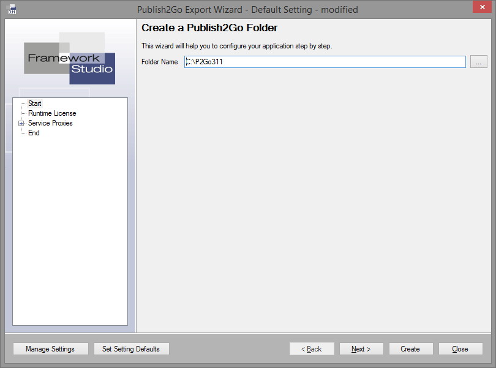

Publish2Go Export-Wizard
Der Publish2Go Export-Wizard wird verwendet, wenn mit Framework Studio entwickelte Applikationen und Dienste (Service Hosts) auf einem Rechner (oder auch auf mehreren Rechnern) installiert werden sollen, auf denen kein Framework Studio installiert ist (siehe Publish2Go Prinzip).
Gestartet wird der Publish2Go Export-Wizard über den Menüeintrag Tools / Publish2Go Export.

Der Publish2Go Export-Wizard arbeitet grundsätzlich wie bei Wizards üblich. Man kann sich mit den Buttons Back und Next durch die verschiedenen Einstellungen navigieren.
Um gezielt eine bestimmte Einstellung zu ändern, können Sie diese auch direkt über den Baum anwählen.
Button Restore Default Settings: Sämtliche Einstellungen, die im Publish2Go Export-Wizard definiert wurden, werden verworfen. Damit wird alles auf die Default-Einstellungen zurückgestellt. Die Default-Einstellungen werden aus der FSDomain gelesen.
Button Back, Next: Zur vorherigen bzw. nächsten Einstellung navigieren.
Button Run: Die ausgewählte Applikation und die ausgewählten Service Hosts werden gestartet.
Siehe auch Registerkarte End
Button Close: Schließt den Publish2Go Export-Wizard. Die geänderten Einstellungen werden in dem aktuellen User-Setting gespeichert.
Start

Folder Name: In diesem Eingabefeld wird der Name des zu erstellenden Publish2Go-Verzeichnisses angegeben. Das Verzeichnis muss leer sein.
Button Load Setting: Hier kann ein gespeichertes Setting aus dem Repository geladen werden. Alle nicht gespeicherten Angaben gehen dabei verloren.
Runtime License
Beim Erstellen eines Publish2Go-Pakets ist es möglich, die zugehörigen Runtime Lizenzen gleich mit zu exportieren. Dazu steht im Publish2Go Wizard der aus dem normalen Publish Wizard bekannte Runtime License Manager zur Verfügung.

Nachdem das Paket erfolgreich erstellt wurde, befinden sich die Runtime Lizenzen im angegebenen Ordner.
Beim Starten des Publish2Go werden alle im Ordner befindlichen Lizenzen automatisch eingelesen.
Service Proxies
Hier kann die Serviceadresse von externen Diensten geändert werden.

End

Save Setting: Mit diesem Button öffnen Sie den Dialog zum Speichern der aktuellen Einstellungen in der Datenbank.
Im Bereich Choose Applications and Service Hosts you want to publish wählen Sie alle Applikationen und Service Hosts aus, die zur Verfügung gestellt werden sollen.
Benutzen Sie den Button Create um den Publish2GO-Ordner mit den ausgewählten Applikationen und Service Hosts zu erstellen.